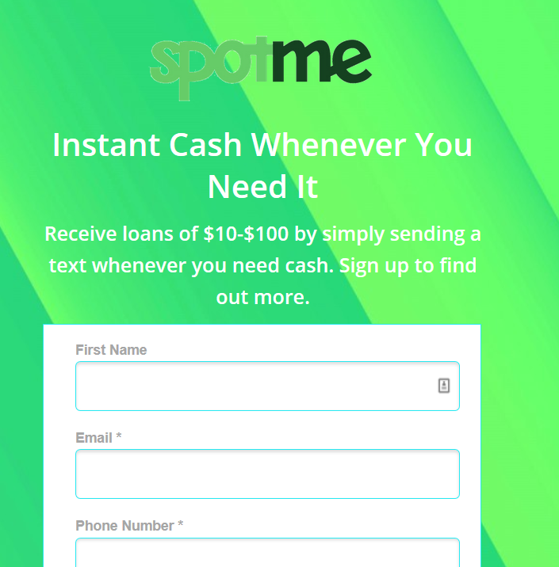
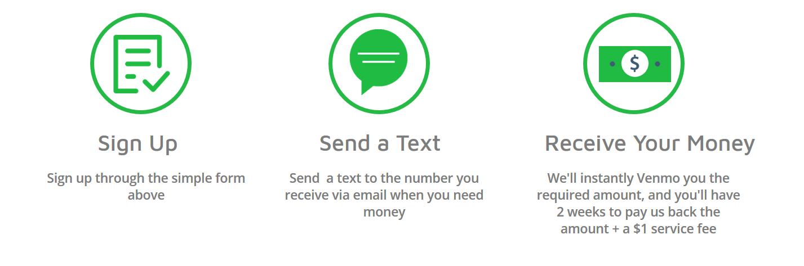

<div id="portfolio-page" class="portfolio-page-content">
    <div class="container">
        <div class="portfolio-nav">
            <div id="portfolio-close-button" class="portfolio-close-button">
                <a href="#portfolio"><i class="fa fa-close"></i></a>
            </div>
        </div>

        <div class="portfolio-title">
            <h1>Spot Me</h1>
        </div>

        <div class="row">
            <div class="col-sm-7 col-md-7 portfolio-block">
                <div class="owl-carousel portfolio-page-carousel">
                    <div class="item">
                        
                    </div>
                    <div class="item">
                        
                    </div>
                </div>

                <script type="text/javascript">
                    jQuery(document).ready(function($){
                        $('.portfolio-page-carousel').owlCarousel({
                            smartSpeed:1200,
                            items: 1,
                            loop: true,
                            dots: true,
                            nav: true,
                            navText: false,
                            margin: 10
                        });
                    }); 
                </script>
            </div>

            <div class="col-sm-5 col-md-5 portfolio-block">
                <!-- Project Description -->
                <div class="block-title">
                    <h3>Description</h3>
                </div>
                <ul class="project-general-info">
                    <li><p><i class="fa fa-globe"></i> <a href="http://www.spot-me.net" target="_blank">spot-me.net (dead now)</a></p></li>
                    <li><p><i class="fa fa-calendar"></i>Summer 2018</p></li>
                </ul>

                <p class="text-justify">Spot Me was slated to be a platform where users could easily borrow very small
                amounts of money. The value hypothesis was that millennials would be willing to
                pay a small flat fee in order to have a small loan ($10-$200) sent directly to their Venmo.</p>
                <!-- /Project Description -->

                <!-- User & Market Research -->
                <div class="block-title">
                    <h3>User & Market Research</h3>
                </div>
                <p class="text-justify">I talked to 6 customers (not as many as I should have) and found that there
                definitely were times when they borrowed small amounts of money from a friend. I just needed to find out whether they
                would rather borrow money from a company (in case they feel embarrassed by asking their friends). I could
                have asked them about their feelings regarding borrowing from a company, but most people do not know
                what they want so their answer would not be very useful.</p>
                <!-- /User & Market Research-->

                <!-- Execution & Methodology -->
                <div class="block-title">
                    <h3>Execution & Methodology</h3>
                </div>
                <p class="text-justify">I decided to use a smoke screen MVP coupled with a simpler version of the app.
                    I had a landing page set up, posted fliers around NYC advertising the site, and observed the conversion
                    rate. For users who signed up and I believed were trustworthy, I emailed them to initiate the process
                    of receiving a micro loan. Since I were so new, there was a significant issue of trust; I could not
                concoct a way to honestly circumvent this issue, so that may have impacted results.</p>
                <!-- /Execution & Methodology-->

                <!-- Outcome -->
                <div class="block-title">
                    <h3>Outcome</h3>
                </div>
                <p class="text-justify">I had a conversion rate of 0.8% (Keep in mind this was from an ad that was randomly posted around NYC.)
                    Out of those who converted, I emailed four to begin the process of borrowing money. None of them
                    responded to the email or follow-up. This could have been because they signed up just out of curiosity initially.
                    Email is also not the most trustworthy method of communication when compared to phone.
                </p>
                <!-- /Outcome-->

                <!-- Lessons -->
                <div class="block-title">
                    <h3>Lessons</h3>
                </div>
                <p class="text-justify">Minimum viable products are usually viewed as scrappy (although for those who
                adhere strictly to the <a href="http://blog.crisp.se/2016/01/25/henrikkniberg/making-sense-of-mvp">scooter-then-care
                        MVP ideology</a> would argue that MVPs should never be scrappy). This becomes an issue when your
                product revolves around something in which trust is essential. I should have gone with an MVP where we
                could easily establish that trust, such as a booth at an event on my own college campuses. My MVP never
                met those trust needs, so I are not sure if people did not reply because of trust or lack of interest in
                the product. This idea still could have merit, but I researched more and did not want to deal with
                the legal struggles of this industry so I moved on.</p>
                <!-- /Lessons-->

            </div>
        </div>
    </div>
</div>
